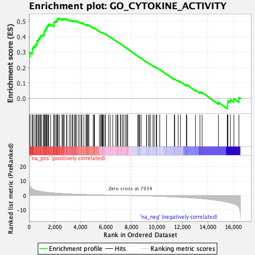

| | | Dataset | DE_genes2 |
| Phenotype | NoPhenotypeAvailable |
| Upregulated in class | na_pos |
| GeneSet | GO_CYTOKINE_ACTIVITY |
| Enrichment Score (ES) | 0.5200607 |
| Normalized Enrichment Score (NES) | 2.2058566 |
| Nominal p-value | 0.0 |
| FDR q-value | 0.002205991 |
| FWER p-Value | 0.013 |
Table: GSEA Results Summary

Fig 1: Enrichment plot: GO_CYTOKINE_ACTIVITY
Profile of the Running ES Score & Positions of GeneSet Members on the Rank Ordered List
| PROBE | GENE SYMBOL | GENE_TITLE | RANK IN GENE LIST | RANK METRIC SCORE | RUNNING ES | CORE ENRICHMENT | | 1 | CXCL3 | | | 1 | 21.432 | 0.0849 | Yes |
| 2 | CCL5 | | | 5 | 15.806 | 0.1474 | Yes |
| 3 | CSF2 | | | 8 | 11.489 | 0.1928 | Yes |
| 4 | IL23A | | | 12 | 10.743 | 0.2352 | Yes |
| 5 | IL32 | | | 16 | 10.363 | 0.2761 | Yes |
| 6 | LEFTY1 | | | 83 | 6.441 | 0.2976 | Yes |
| 7 | CMTM7 | | | 244 | 4.713 | 0.3065 | Yes |
| 8 | CSF3 | | | 250 | 4.664 | 0.3247 | Yes |
| 9 | BMP1 | | | 329 | 4.296 | 0.3369 | Yes |
| 10 | TNFSF9 | | | 453 | 3.821 | 0.3446 | Yes |
| 11 | CXCL9 | | | 553 | 3.561 | 0.3527 | Yes |
| 12 | NDP | | | 603 | 3.408 | 0.3632 | Yes |
| 13 | CXCL10 | | | 623 | 3.364 | 0.3754 | Yes |
| 14 | LIF | | | 724 | 3.157 | 0.3818 | Yes |
| 15 | CXCL2 | | | 773 | 3.082 | 0.3911 | Yes |
| 16 | CXCL11 | | | 855 | 2.930 | 0.3977 | Yes |
| 17 | BMP4 | | | 909 | 2.856 | 0.4058 | Yes |
| 18 | IL1B | | | 989 | 2.750 | 0.4119 | Yes |
| 19 | IL17C | | | 1122 | 2.573 | 0.4141 | Yes |
| 20 | IL11 | | | 1177 | 2.497 | 0.4207 | Yes |
| 21 | EBI3 | | | 1183 | 2.494 | 0.4303 | Yes |
| 22 | CXCL16 | | | 1195 | 2.470 | 0.4394 | Yes |
| 23 | CXCL1 | | | 1270 | 2.390 | 0.4443 | Yes |
| 24 | IL19 | | | 1313 | 2.342 | 0.4511 | Yes |
| 25 | CXCL8 | | | 1367 | 2.297 | 0.4569 | Yes |
| 26 | GDF15 | | | 1396 | 2.271 | 0.4642 | Yes |
| 27 | IL36G | | | 1420 | 2.249 | 0.4717 | Yes |
| 28 | GRN | | | 1505 | 2.173 | 0.4752 | Yes |
| 29 | FLT3LG | | | 1538 | 2.143 | 0.4818 | Yes |
| 30 | CD70 | | | 1691 | 1.997 | 0.4804 | Yes |
| 31 | TNFSF13 | | | 1933 | 1.807 | 0.4729 | Yes |
| 32 | IL34 | | | 1943 | 1.797 | 0.4795 | Yes |
| 33 | CMTM3 | | | 1945 | 1.795 | 0.4865 | Yes |
| 34 | CCL20 | | | 1950 | 1.792 | 0.4934 | Yes |
| 35 | CCL17 | | | 1961 | 1.785 | 0.4999 | Yes |
| 36 | WNT7A | | | 2077 | 1.699 | 0.4996 | Yes |
| 37 | SECTM1 | | | 2167 | 1.639 | 0.5006 | Yes |
| 38 | CCL2 | | | 2172 | 1.637 | 0.5069 | Yes |
| 39 | CCL28 | | | 2188 | 1.629 | 0.5124 | Yes |
| 40 | CX3CL1 | | | 2246 | 1.590 | 0.5153 | Yes |
| 41 | BMP2 | | | 2271 | 1.578 | 0.5201 | Yes |
| 42 | GDF11 | | | 2382 | 1.503 | 0.5193 | No |
| 43 | IL7 | | | 2577 | 1.400 | 0.5130 | No |
| 44 | TGFB2 | | | 2647 | 1.364 | 0.5142 | No |
| 45 | CCL22 | | | 2678 | 1.350 | 0.5178 | No |
| 46 | NODAL | | | 2758 | 1.305 | 0.5181 | No |
| 47 | PPBP | | | 2931 | 1.224 | 0.5125 | No |
| 48 | IL36A | | | 2955 | 1.213 | 0.5159 | No |
| 49 | TNFSF11 | | | 3148 | 1.133 | 0.5087 | No |
| 50 | CCL21 | | | 3264 | 1.087 | 0.5060 | No |
| 51 | CXCL6 | | | 3386 | 1.044 | 0.5027 | No |
| 52 | INHBA | | | 3415 | 1.033 | 0.5051 | No |
| 53 | TNFSF14 | | | 3541 | 0.992 | 0.5014 | No |
| 54 | IL36RN | | | 3618 | 0.962 | 0.5006 | No |
| 55 | GDF5 | | | 3625 | 0.959 | 0.5041 | No |
| 56 | TGFB3 | | | 3721 | 0.923 | 0.5019 | No |
| 57 | EDN1 | | | 3869 | 0.875 | 0.4964 | No |
| 58 | CCL19 | | | 3986 | 0.841 | 0.4927 | No |
| 59 | FAM3D | | | 4103 | 0.807 | 0.4888 | No |
| 60 | TNFRSF11B | | | 4131 | 0.800 | 0.4903 | No |
| 61 | PF4V1 | | | 4288 | 0.752 | 0.4838 | No |
| 62 | TNFSF12 | | | 4453 | 0.706 | 0.4766 | No |
| 63 | IL1RN | | | 4515 | 0.689 | 0.4756 | No |
| 64 | TNFSF10 | | | 4539 | 0.682 | 0.4769 | No |
| 65 | IL18 | | | 4577 | 0.667 | 0.4773 | No |
| 66 | CMTM8 | | | 4661 | 0.647 | 0.4748 | No |
| 67 | INHA | | | 4675 | 0.643 | 0.4766 | No |
| 68 | C17orf99 | | | 5018 | 0.566 | 0.4580 | No |
| 69 | BMP3 | | | 5090 | 0.547 | 0.4558 | No |
| 70 | CRLF1 | | | 5121 | 0.538 | 0.4561 | No |
| 71 | FAM3B | | | 5501 | 0.449 | 0.4348 | No |
| 72 | THNSL2 | | | 5607 | 0.426 | 0.4301 | No |
| 73 | IFNA1 | | | 5655 | 0.414 | 0.4289 | No |
| 74 | TNFSF13B | | | 5723 | 0.400 | 0.4264 | No |
| 75 | IL1A | | | 5772 | 0.390 | 0.4250 | No |
| 76 | CTF1 | | | 5776 | 0.389 | 0.4263 | No |
| 77 | C10orf99 | | | 5826 | 0.379 | 0.4249 | No |
| 78 | C1QTNF4 | | | 5942 | 0.357 | 0.4193 | No |
| 79 | CXCL13 | | | 5976 | 0.350 | 0.4186 | No |
| 80 | IL15 | | | 6214 | 0.299 | 0.4054 | No |
| 81 | BMP6 | | | 6347 | 0.276 | 0.3984 | No |
| 82 | SCGB3A1 | | | 6547 | 0.234 | 0.3872 | No |
| 83 | BMP8A | | | 6782 | 0.187 | 0.3737 | No |
| 84 | TGFB1 | | | 6882 | 0.174 | 0.3684 | No |
| 85 | TIMP1 | | | 6949 | 0.163 | 0.3650 | No |
| 86 | IL24 | | | 6962 | 0.162 | 0.3649 | No |
| 87 | CSF1 | | | 7141 | 0.127 | 0.3545 | No |
| 88 | CXCL14 | | | 7186 | 0.119 | 0.3523 | No |
| 89 | INHBB | | | 7323 | 0.093 | 0.3444 | No |
| 90 | CKLF | | | 7422 | 0.078 | 0.3387 | No |
| 91 | CLCF1 | | | 7582 | 0.052 | 0.3293 | No |
| 92 | IL16 | | | 7583 | 0.052 | 0.3295 | No |
| 93 | SLURP1 | | | 7701 | 0.033 | 0.3225 | No |
| 94 | CXCL5 | | | 7716 | 0.030 | 0.3217 | No |
| 95 | WNT5A | | | 8495 | -0.092 | 0.2747 | No |
| 96 | PF4 | | | 8578 | -0.107 | 0.2701 | No |
| 97 | BMP7 | | | 8609 | -0.110 | 0.2687 | No |
| 98 | INHBE | | | 8659 | -0.121 | 0.2662 | No |
| 99 | CMTM2 | | | 8770 | -0.148 | 0.2601 | No |
| 100 | TNFSF15 | | | 9186 | -0.236 | 0.2357 | No |
| 101 | BMP8B | | | 9207 | -0.242 | 0.2355 | No |
| 102 | TXLNA | | | 9374 | -0.282 | 0.2265 | No |
| 103 | TNFSF4 | | | 9394 | -0.288 | 0.2264 | No |
| 104 | IFNE | | | 9502 | -0.313 | 0.2212 | No |
| 105 | IL33 | | | 9695 | -0.367 | 0.2109 | No |
| 106 | SCG2 | | | 9785 | -0.396 | 0.2071 | No |
| 107 | IL6 | | | 9946 | -0.445 | 0.1991 | No |
| 108 | IL17D | | | 9960 | -0.447 | 0.2000 | No |
| 109 | CCL26 | | | 9984 | -0.456 | 0.2004 | No |
| 110 | FAM3C | | | 10221 | -0.531 | 0.1882 | No |
| 111 | IL12A | | | 10759 | -0.711 | 0.1583 | No |
| 112 | GPI | | | 11363 | -0.953 | 0.1253 | No |
| 113 | VSTM1 | | | 11398 | -0.968 | 0.1270 | No |
| 114 | AREG | | | 11666 | -1.074 | 0.1150 | No |
| 115 | TSLP | | | 11841 | -1.148 | 0.1090 | No |
| 116 | CMTM1 | | | 12306 | -1.376 | 0.0861 | No |
| 117 | VEGFA | | | 12342 | -1.396 | 0.0895 | No |
| 118 | GREM1 | | | 13022 | -1.781 | 0.0552 | No |
| 119 | NAMPT | | | 13369 | -2.009 | 0.0421 | No |
| 120 | GDF9 | | | 13538 | -2.123 | 0.0402 | No |
| 121 | HMGB1 | | | 14818 | -3.383 | -0.0243 | No |
| 122 | KITLG | | | 15505 | -4.490 | -0.0483 | No |
| 123 | NRG1 | | | 15534 | -4.562 | -0.0320 | No |
| 124 | C5 | | | 15556 | -4.604 | -0.0150 | No |
| 125 | AIMP1 | | | 15749 | -5.009 | -0.0068 | No |
| 126 | SPP1 | | | 16027 | -5.744 | -0.0010 | No |
| 127 | FGF2 | | | 16419 | -7.977 | 0.0068 | No |
Table: GSEA details [plain text format]
Fig 2: GO_CYTOKINE_ACTIVITY: Random ES distribution
Gene set null distribution of ES for GO_CYTOKINE_ACTIVITY